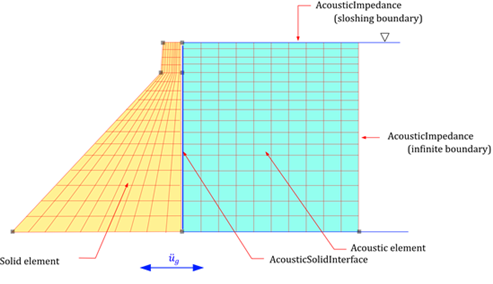
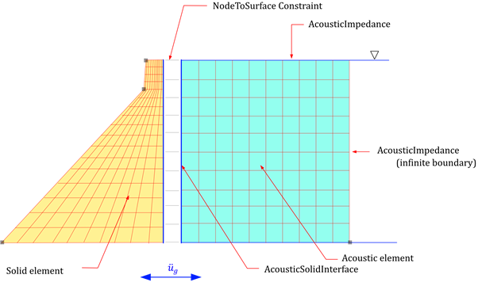
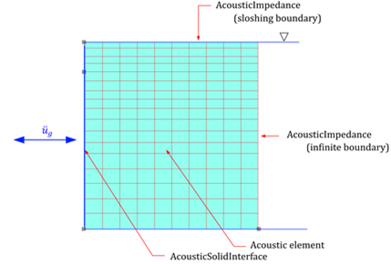

4.7 AcousticSolid
The Acoustic solid element is used to analyze media that follow the wave equation for dynamic pressure fields. Therefore, it is only valid for *Step, Type=Dynamic or *Step, Type=Frequency. The related elements, sections, materials, and boundary conditions are as follows.
Acoustic Solid element
- AC2D3: 2D triangular 3-node element
- AC2D4: 2D quadrilateral 4-node element
- AC3D4: 3D tetrahedral 4-node element
- AC3D6: 3D prismatic 6-node element
- AC3D8: 3D hexahedral 8-node element
- AC2D4PMDL: 2D 4-node PMDL element
- AC3D8PMDL: 3D 8-node PMDL element
Load
- Concentric: Applies concentric flux to the nodes.
- Displacement: Non-zero pressure condition.
- SurfaceDistributed: Applies flux to the element surface.
Constraint
- Support: Sets the pressure to zero.
- AcousticImpedance: Applies the impedance boundary condition.
- AcousticSolidLink: Sets the interface between solid elements and fluid, or transforms seismic loads.
Section
- Solid : The assigned material must be defined as
*Material, Tyep=Acoustic.
Material
- Acoustic: Defines the bulk modulus and density.
The following figure shows a seismic analysis model considering fluid-structure interaction for a dam. The dam and the fluid are modeled using solid and acoustic elements, respectively. The free surface is defined using AcousticImpedance with \(a=1/g, b=0\) to account for sloshing, and the far field is defined with \(a=0, b=\beta/c\) for AcousticImpedance. The fluid-solid interface is defined using AcousticSolidLink.

Fig. 4.7-1. Seismic Analysis of a Dam Considering Fluid-Structure Interaction
If the meshes of the fluid and structure do not match, an AcousticSolidLink can be set at the fluid surface, and constraints can be applied to the corresponding structural surface to model the interaction. In cases where the dam is assumed to be a rigid body, even if no solid elements are present, AcousticSolidLink must be applied at the fluid surface in contact with the structure for seismic loads to be applied.

Fig. 4.7-2. Handling Mismatched Meshes in Fluid-Structure Interaction

Fig. 4.7-3. Seismic Analysis of a Dam Without Fluid-Structure Interaction (Rigid Dam Assumption)
For PMDL elements such as AC3D8PMDL, it is necessary to specify which formulation (PMDL or SimplePMDL) to use and which direction to apply the wave propagation direction in *Section, Type=Solid. The SimplePMDL formulation uses the Midpoint Integrated Element Formulation, which integrates only at the central point in the specified direction in a standard finite element formulation. This method is used for economically analyzing infinite domains during wave propagation analysis.
- R direction in AC2D4: 1x2 for stiffness matrix calculation, 1x3 for mass matrix calculation.
- S direction in AC2D4: 2x1 for stiffness matrix calculation, 3x1 for mass matrix calculation.
- RS direction in AC2D4: 1x1 for stiffness matrix calculation, 1x1 for mass matrix calculation.
- R direction in AC3D8PMDL: 1x2x2 for stiffness matrix calculation, 1x3x3 for mass matrix calculation.
- S direction in AC3D8PMDL: 2x1x2 for stiffness matrix calculation, 3x1x3 for mass matrix calculation.
- T direction in AC3D8PMDL: 2x2x1 for stiffness matrix calculation, 3x3x1 for mass matrix calculation.
- RS direction in AC3D8PMDL: 1x1x2 for stiffness matrix calculation, 1x1x3 for mass matrix calculation.
- TR direction in AC3D8PMDL: 1x2x1 for stiffness matrix calculation, 1x3x1 for mass matrix calculation.
- ST direction in AC3D8PMDL: 2x1x1 for stiffness matrix calculation, 3x1x1 for mass matrix calculation.
- RST direction in AC3D8PMDL: 1x1x1 for stiffness matrix calculation, 1x1x1 for mass matrix calculation.
Example
#########################
# Mesh
#########################
*Node
1, -96.80, 0
11, 0, 0
21, 100, 0
1301, -9.8, 111.534
1311, 0, 111.534
1321, 100, 111.534
1701, -9.8, 122
1711, 0, 122
1721, 100, 122
*Ngen, Nset=bottom
1, 11, 1
11, 21, 1
*Ngen, Nset=middle
1301, 1311, 1
1311, 1321, 1
*Ngen, Nset=top
1701, 1711, 1
1711, 1721, 1
*Nfill
bottom, middle, 100, 0.2
middle, top, 100, 9.8/9.8
*Element, Type=CPE4
1, 1, 2, 102, 101
*Elgen, Elset=dam
1,10,1,1, 17, 100, 100
*Element, Type=AC2D4
11, 11, 12, 112, 111
*Elgen, Elset=water
11,10,1,1, 17, 100, 100
#########################
# Material/Section
#########################
*Material, Type=Acoustic, Name=water
# 2190.4E+6, 1000 # bulkModulus, density
0, 1000 # bulkModulus, density
*Section, Type=Solid, Name=water
water, 1 # thickness
*Material, Type=IsoElasticity, Name=dam
25E9, 0.2, 0, 2300 # E, nu, alpha, density
*Section, Type=Solid, Name=dam
dam, 1 # thickness
*Distribution, Type=Section
dam, dam
water, water
#########################
# Surface and Nset for Load
#########################
*Surface, Name=FreeSurface
3@1611:1620
*Surface, Name=FarField
2@20:1620:100
*Surface, Name=DamInterface
4@11:1611:100
*Nset, Name=DamBottom
1:11
#########################
# Constraint & Load
#########################
*Constraint, Type=AcousticImpedance, Name=FreeSurface
FreeSurface, 1/9.81,0
*Constraint, Type=AcousticImpedance, Name=FarField
FarField, 0, 1/1480
*Constraint, Type=AcousticSolidLink, Name=DamInterface
DamInterface, 1000
*Constraint, Type=Support, Name=DamBottom
DamBottom, X|Y
*Function Type=File Name=acc
# ELC270-AT2, 0.01, 32.2*12 # scaled by G
ELCchopra.dat, 0.02, 32.2*12 # file, xstep, scale, comment : scaled by G
*LOAD, Type=Earthquake, Name=Earthquake, Func=acc
1,0,0
*STEP, Type=Dynamic, Name=Coupled
,0.02,40.
*Activate, Type=Element
dam, water
*Activate, Type=Constraint
DamBottom, FreeSurface, FarField, DamInterface
*Activate, Type=Load
Earthquake
*RayleighDamping
Equivalent,3.54542, 8.00412, 0.05, 0.05, dam
*History File=Coupled.csv
D.X@1701
4.7.1 *Element, Type=AC2D3
*Element, Type=AC2D3, Elset=elset
id, n1, n2, n3{, S=section }
...
Specifications
- No. of nodes : 3
- No. of integration pts. : 1
- Fields : Material model at each Gauss points
- Compatible section : SolidSection
- Active DOFs : P
4.7.2 *Element, Type=AC2D4
*Element, Type=AC2D4, Elset=elset
id n1 n2 n3 n4{, S=section}
...
Specifications
- No. of nodes: 4
- No. of integration pts.: 2-by-2
- Fields: Material model at each Gauss points
- Compatible section: SolidSection
- Active DOFs: P
4.7.3 *Element, Type=AC3D4
*Element, Type=AC3D4, Elset=elset
id n1 n2 n3 n4 {, S=section}
...
Specifications
- No. of nodes : 4
- No. of integration pts. : 1
- Fields : Material model at each Gauss points
- Compatible section : SolidSection
- Active DOFs : P
4.7.4 *Element, Type=AC3D6
*Element, Type=AC3D6, Elset=elset
id n1 n2 n3 n4 n5 n6{, S=section}
...
Specifications
- No. of nodes : 6
- No. of integration pts. : 2
- Fields : Material model at each Gauss points
- Compatible section : SolidSection
- Active DOFs : P
4.7.5 *Element, Type=AC3D8
*Element, Type=AC3D8, Elset=elset
id n1 n2 n3 n4 n5 n6 n7 n8{, S=section}
...
Specifications
- No. of nodes : 8
- No. of integration pts. : 2-by-2-by-2
- Fields : Material model at each Gauss points
- Compatible section : SolidSection
- Active DOFs : P
4.7.6 *Element, Type=AC2D4PMDL
*Element, Type=AC2D4PMDL, Elset=elset
id n1 n2 n3 n4{, S=section}
...
Specifications
- No. of nodes: 4
- No. of integration pts.: formulation depependent*
- Fields: Material model at each Gauss points
- Compatible section: SolidSection
- Active DOFs: P
2-by-2 integration is used for PMDL formuation, but 1-by-2 or 2-by-1 integration is used for SimplePMDL formuation
4.7.7 *Element, Type=AC3D8MPMDL
*Element, Type=AC3D8PMDL, Elset=elset
id n1 n2 n3 n4 n5 n6 n7 n8{, S=section}
...
Specifications
- No. of nodes : 8
- No. of integration pts.: formulation depependent*
- Fields : Material model at each Gauss points
- Compatible section : SolidSection
- Active DOFs : P
2-by-2-by-2 integration is used for PMDL formuation, but 1-by-2-by-2, 2-by-1-by-2, or 2-by-2-by-1 integration is used for SimplePMDL formuation